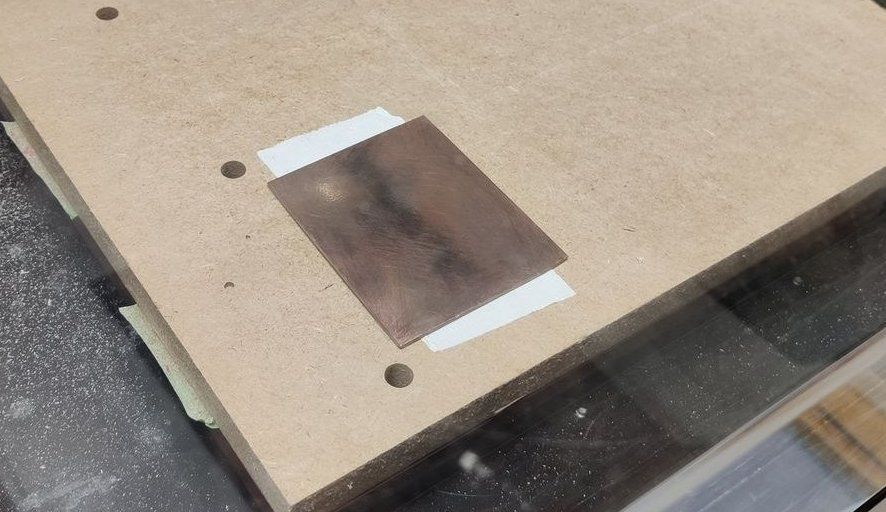
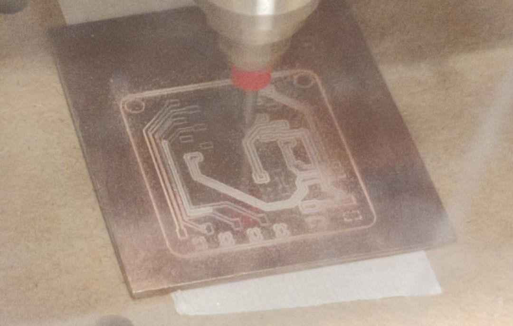
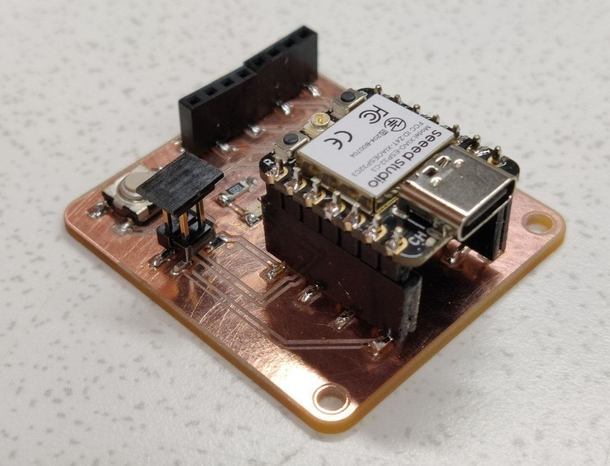

Table of Contents
Assignment
Group assignment
* Join one of the test equipment introduction session.
* Use the test equipment (benchtop power supply, oscilloscope, logic analyzer) at the Fablab to observe the operation of a microcontroller circuit board.
* Check operating voltage on the board with multimeter or voltmeter.
* Elect a group leader who will be responsible for creating group assignment page.
* Help group leader with adding relevant information to the group assignment page.
Individual assignment
* Add link to the group assignment to your documentation page along with a paragraph of text about what you learned.
* Design and make a circuit board using KiCad or equivalent electronics design automation (EDA) software.
* You can use XIAO, ATtiny, D11C microcontrollers as core components.
* As a minimum, add a LED, a button and a 2x2 connector for serial communication with other boards that you will make in following weeks.
* Break out all the unused pins of the microcontroller you are using as the core.
* Calculate the ideal value of a current limiting resistor for the LED you are using on your board. Group
The group assignment responsibilities for this week were handled by Tomi Monahan
KiCad
For my first board, I wanted something general purpose. I didn’t want to attempt to make a board for my final project just yet, at least not directly. I needed more practice before that.
I went with the XIAO ESP32 for this board due to its wireless capabilities. A plausible use case I thought of was a wireless remote or controller for some other project. This would give me the opportunity to try out wireless data transfer, because I would be needing it for the glove controllers. I’d get to test the bandwidth and latency and hopefully also test the flex sensors and an accelorometer.
The power pins on this chip are outputs, unlike the power pins on the Attiny, which are inputs. Well, these ones also can be used as inputs because the chip supports being battery powered. Not applicable here, I didn’t want the added complexity.
The pins labeled A0 - A3 are analog pins, which would preferrably be used for analog sensors such as the flex sensors. The pins prefixed with D are just digital pins. Some also have been labeled SDA, SCL, TX, RX, MOSI, MISO, SCK. These all apparently relate to communication between other chips, so they weren’t relevant here.
I added the first two essential components in KiCad’s schematic editor. The Xiao chip itself, and the 2x02 pin header that was requested for networking purposes.
Then, the rest of the required components. An LED and a button. The analog pins would be lead to sockets and a header.

My understanding was that each sensor or switch I would want to connect would need its own ground. So I needed 8 pins in total. I originally wanted to use the horizontal socket, but the labels on its pins scared me off. I opted for two 4pin vertical sockets instead.
With this small number of components, the layout wasn’t going to present difficulties in a technical sense. It did take some time to decide where to put the sockets though, without a clear use-case in mind for the board.
Ended up simply putting the sockets at the opposite end of Xiao’s USB-C port. The button went to the corner for easy access when holding the board in one’s hand.

Set the clearance and track width to 0.4mm from the default 0.2mm, as recommended in the lecture.

Of course, during routing it can become clear that some pins should be switched around to be better in line with their destinations.
Entered a fillet radius of 3mm.

Everything routed at this point, except for the ground.
The design rules checker seemed fine with everything. The silkscreen stuff was irrelevant for this board.
Settings used for the export of gerbers.

All ground pins were connected to the base plate, as suggested in the lecture. It is nice to not have to worry about routing the ground pins, makes the work quite a bit simpler.
Time for milling. My board was supposedly even a bit smaller than the Tarantino, so I got one of the last remaining small copper plates for it.
The plate must have been ever so slightly bent, because the milling didn’t go through the copper layer at the edges of the plate. Twice I had to increase the depth slightly and go again until all of the routes were properly milled. You could tell by the color and reflectivity of the gaps whether they had gone through the copper all the way.

Three milling passes and it was done. In the future it might be worth increasing the milling depth by default, and of course take more care to ensure the plate is as straight as possible.
Finished milling.

The pin sockets were in these long pieces that were supposed to be cut to specified sizes.
I went with two 4pin pieces for the analog inputs and with two 7pin pieces for the Xiao. I chose to have the 7 together in one component despite it being harder to solder, because the tradeoff of them being better aligned with each other was worth it for me.
Soldering work in progress.
Soldering finished. I allowed the ground pin connections to be sloppy, assuming that wouldn’t matter since those were connected to the entire base copper layer anyway.